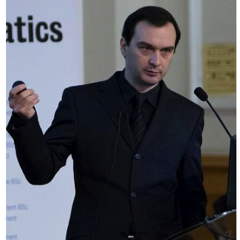

Organisers
Dr. Rashed Karim
Research fellow, King's College London
Honorary lecturer, Imperial College London.
Dr. Kawal Rhode
Reader
King's College London.
MRI leads

Dr. Oleg Aslanidi
Senior lecturer
King's College
Dr. Marta Valera
Research associate
King's College
Mr. Ross Morgan
PhD researcher
King's College
CT and clinical leads
Dr. Ronak Rajani
Consultant cardiologist, heart failure and imaging
St. Thomas' Hospital
London, UK
Dr. Pranav Bhagirath
Cardiologist
Haga Teaching Hospital
The Hague, Netherlands